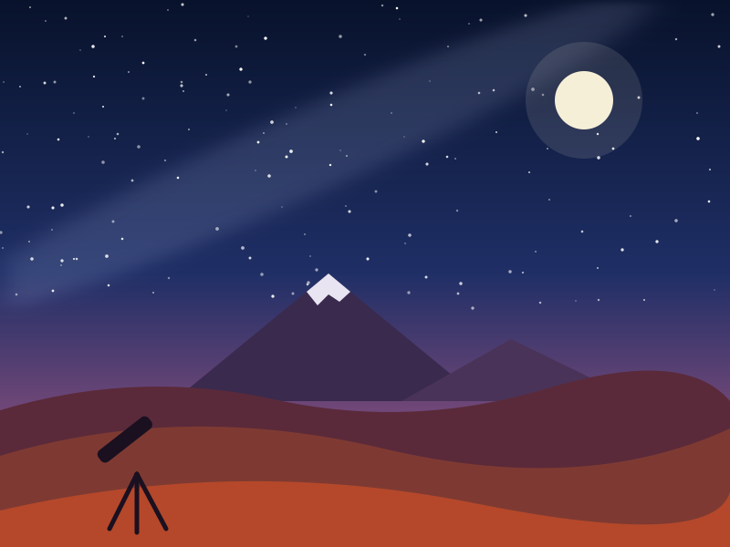
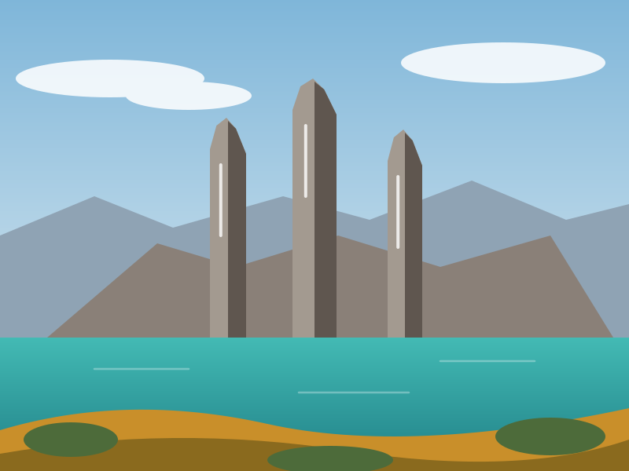
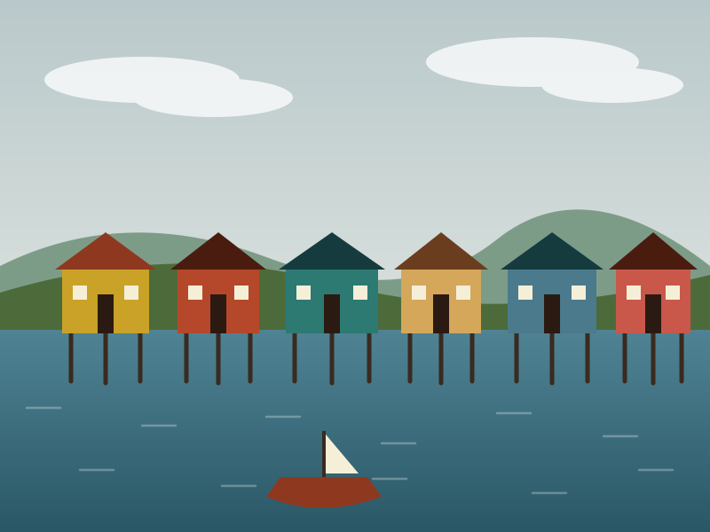
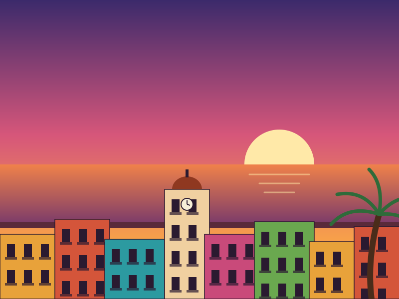
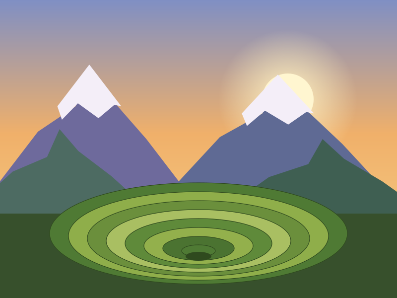
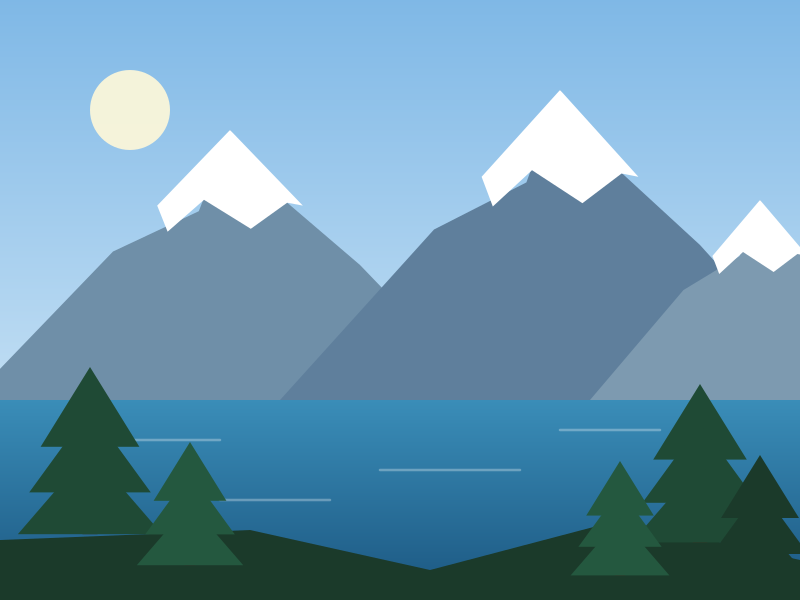

Astronomía
Ver destino
Observación de estrellas en Atacama
Noche guiada con telescopio profesional en el desierto más árido del mundo.
Experiencias
Cada experiencia se puede sumar a cualquier paquete. Aquí las más pedidas.

Noche guiada con telescopio profesional en el desierto más árido del mundo.

Los miradores más icónicos del parque en formato de 3 días, sin acampar.

Preparación tradicional en tierra junto a una familia local, con historia incluida.

Recorrido a pie por el centro histórico, con parada en el Café del Mar al atardecer.

Terrazas de Moray, salineras de Maras y cierre en Machu Picchu.

Miradores, chocolatería artesanal y una parada de trekking en Cerro Campanario.